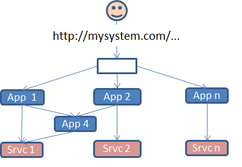

Welcome to LDA
LDA is a light-weight framework that helps developers design and implement integrated systems – for example web-sites – that are composed of multiple applications and can be easily deployed on clouds.
LDA helps you implement applications, but LDA’s primary purpose is not implementing individual applications – there are lots of technologies for that. Rather, LDA helps implement coherent systems – for example large websites – made up of multiple applications that talk to each other. LDA applications are system components that communicate entirely through HTTP/REST interfaces. Two other common approaches for integrating applications, the ‘central repository’ approach and the one that in recent years has come to be called ‘SOA’, have problems that we believe the LDA approach overcomes.

We have seen that the regular HTML web is an extraordinary integrator. By embedding links – usually HTML anchor tags – inside pages, HTML enables the user of a browser to navigate to other pages without constraining in any way how those pages are implemented – they don’t even have to be HTML. This integration does not require any sort of coordination or contract between the owners of the referenced pages and the owner of the page that references them, except perhaps to demand that the URLs used to reference the pages should not change or disappear. This extraordinarily simple idea has allowed the world-wide web to freely integrate commerce sites, blogs and micro-blogs, music sites, video sites, social networking sites, government sites, news sites and so on.
The basic idea of Linked Data is that if you just substitute a data model (RDF) for HTML and otherwise ‘make like the world-wide web’, then applications can achieve the same sort of easy and limitless integration of data that we see for user interface in the HTML web. For this to work, we need to implement client applications that ‘make like a browser’ and server applications that expose all data as hypertext-linked resources. The LDA framework provides server-side and a client-side components that make it easy to create applications that follow exactly that pattern.
In addition to using long-standing technologies like HTML and RDF, LDA implements (parts of) newer specifications like the Linked Data Platform.
The server-side component is written in Python, about 75% of which would need to be ported to other languages to support application development in those languages. We have not yet done such ports, so currently you have to write server applications in Python to use our framework. The other 25% of the server code takes the form of subsystems that implement standard system functions – authentication, access control and multi-tenancy – that are accessed as HTTP resources and so can remain in Python even on a system that implements applications in other languages.
LDA’s client component consists of Javascript libraries containing helper methods for various common tasks. There is almost no framework code on the client – you can write your clients using whatever Javascript frameworks you like and still use the LDA libraries. The libraries simply make it easier to work with data from resources produced by LDA-based servers.
Getting Started
The best way to get started with LDA is by downloading the framework and example repositories from github and then running the ‘Todo Sample’ and its corresponding tutorial.
Once you understand the ‘Todo Sample’, you should have a pretty good understanding of how a basic LDA application functions. If you then look at (and run) the rest of the examples, you’ll start to see the kinds of things that are possible with LDA and how flexible and open it is wrt. UI programming style.
There are also a number of resources that you may want to read to get a better understanding of the architecture and patterns that LDA is encouraging and why.
- LDA Client Libraries
- LDA Server Libraries
- What Is This RDF Thing
- More to come …
You can contact us, ask questions, get involved, etc., by posting github issues or asking question on Stack Overflow …